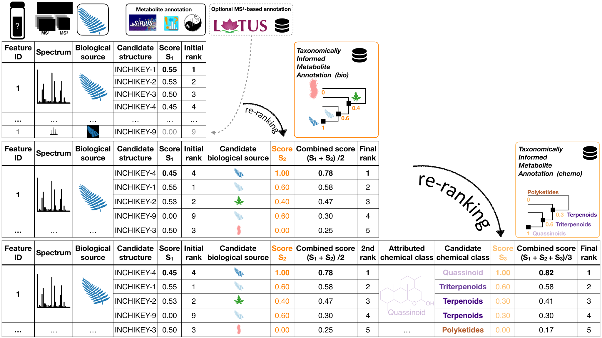

The initial work is available at https://doi.org/10.3389/fpls.2019.01329, and many improvements have been made since then. The worklow is illustrated in Figure 1.

Figure 1
This repository contains everything needed to perform Taxonomically Informed Metabolite Annotation.
It is provided with an example from well-known pharmacopoeia plants.
Here is what you minimally need:
- A feature list with or without candidate annotations, if you are using GNPS, it can be your GNPS job ID.
- The source organism of the extract you are annotating, if you are associating metadata within GNPS, it can be your GNPS job ID.
- An edge list, if you are using GNPS, it can be your GNPS job ID.
Optionally, you may want to add:
- An in-house structure-organism pairs library (we provide LOTUS as starting point for each user)
- Your own manual or automated annotations (we currently support annotations coming from ISDB and SIRIUS)
Installation
As the package is not (yet) available on CRAN, you will need to install the development version, therefore:
bash install_package.shor in R directly:
if(!requireNamespace("remotes", quietly = TRUE))
install.packages("remotes")
remotes::install_github("taxonomicallyinformedannotation/tima-r")Use
Copy initial parameters
# copy the default params to adapat to your data later on
cp -R config/default config/paramsStructure-organism pairs library
bash inst/scripts/get_lotus.sh &&
Rscript inst/scripts/prepare_lotus.R &&
# Rscript inst/scripts/prepare_closed.R && # only if you have access to it
Rscript inst/scripts/prepare_library.R &&
Rscript inst/scripts/prepare_adducts.R &&Annotations
Get MS2 annotations
# (spectral-lib-matcher, which is only in python. see related repo)
# instead we provide an example file coming from the new ISDB.
# It also works with annotations coming from GNPS (see next steps)
bash inst/scripts/get_example_isdb.shFormat MS2 annotations
# depending on the annotation tool you used
Rscript inst/scripts/prepare_gnps.R && # optional
Rscript inst/scripts/prepare_sirius.R && # optional
Rscript inst/scripts/prepare_isdb.R &&